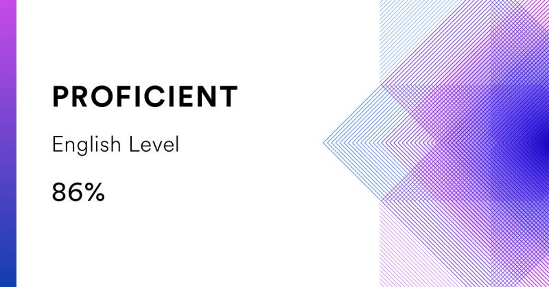

I have wide experience of working as an analyst in a large IT company.
Now I hold the position of a leading QA engineer. It seems that
everything I wanted to achieve has come true, but I never miss the
opportunity to grow, to learn something new. I love learning. As a
highly motivated and detail-oriented QA Engineer, I possess a robust
skillset in software testing and quality assurance methodologies. My
expertise lies in both manual and automated testing. I am continuously
seeking opportunities to enhance my skills and knowledge in the field,
making me a quick learner and adaptable team player.
2023-06 - Current - QA Engineer 2018-01 - 2023-06 - QA Engineer /
Business Analyst 2017-09 - 2018-11 - Manual QA / Analyst
Russian Native English C1 French A2

describe('Manage Jenkins > Verify Title', () => { it('Verify the Title
of the Manage Jenkins page ', () => { cy.get('.task-link-wrapper >
a[href="/manage"]').click() cy.get(' .jenkins-app-bar__content
h1').should('be.visible') .and('have.text', 'Manage Jenkins'); }) })
https://www.linkedin.com/in/anna-kh/